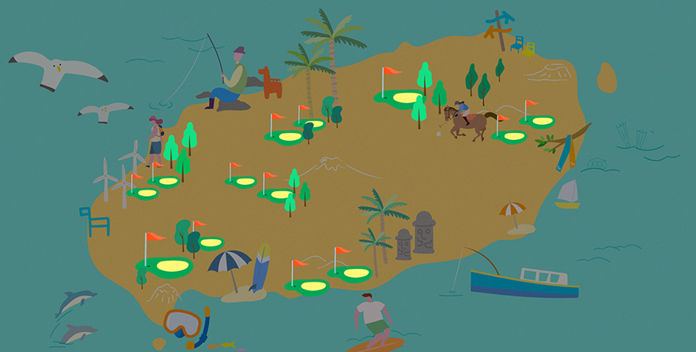
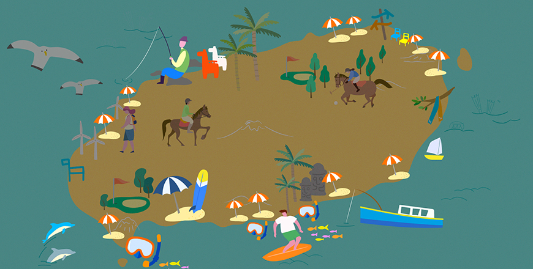

기획취재콘텐츠
- Home
- 제주라이프
- 기획취재콘텐츠
How Jeju’s Leisure Industry Captivated Tourists from Korea and Beyond. Part 1새로운 글


Jeju is, without a doubt, a paradise of leisure sports and activities. From Hallasan, a mountain formed by volcanic eruptions, and the hills boasting their elegantly curved contours to the vast flatlands and the ocean, Jeju is abundant in leisure and activity spots. The varied terrains have transformed Jeju, with all its potential hot spots, into a mecca of the leisure industry. The island’s mild climate, strong winds, and bountiful sunlight are also indispensable for the growth of the industry.
Observing jeju’s beautiful nature and attractions has always been a popular activity. However, some tourists still prefer a holistic experience of nature. In June 2020, the Jeju Tourism Organization announced the results of the Survey on Travel Plans to Jeju for the next year. When asked what they want to do during the trip, 77.7% of the respondents selected observing the island’s natural landscape. In contrast, 52.6% chose trekking, and 12.7% answered that they plan to enjoy leisure sports, such as golf and horseback riding.
Why are tourists from Korea and beyond attracted to Jeju? What are the characteristics and strengths of the leisure industry in Jeju? From Jeju’s leading leisure sports, such as golf and horseback riding, and trekking spots attracting travelers to “hopping” tours, this article takes a close look into the world of Jeju’s diverse leisure industry.
A Carefree Round of Golf, Surrounded by God-Given Nature – Golf

According to the Korea Golf Course Business Association, 41 out of 494 Korean golf courses in operation as of January 2020 are located in Jeju. Jeju ranks fourth in the last, only surpassed by Gyeonggi-do, Gangwon-do, and Gyeongsangbuk-do. Jeju’s golf industry had a period of recession caused by fierce competition among golf courses spanning across the country and the abolishment of the tax exemption policy for membership golf courses. However, because of the increased demand after the COVID-19 outbreak and the reintroduction of the tax exemption policy, the industry’s chance for recovery is looking bright.
Golf is gradually gaining a reputation as a sport safe from infection, as it is played in small groups surrounded by vast nature. In addition, deprived of practically all overseas travel options because of COVID-19, golf tourists are resorting to Jeju golf courses instead.
The number of tourists visiting Jeju drastically decreased in the first half of 2020. However, thanks to the increased visits from Jeju residents, Jeju golf courses were visited by 358,550 people between January and March, recording a mere 3.9% decrease from 373,067 in the same period last year. The number of golfers gradually increased thereafter, nearing the pre–COVID-19 level as of August 2020. During the summer vacation season, many golf courses in Jeju were fully booked.
- A view of Hole 18 (Left) and 11 (Right) of the club Nine Bridge, which hosts the CJ Cup Nine Bridges ⓒCJ Group
the beautiful course existing in harmony with Jeju’s nature -
the beautiful course existing in harmony with Jeju’s nature -
One of the appeals of golf is the experience of walking carefree on low-rising hills and wide grasslands and then testing one’s focus when it is time to hit the next shot. In Jeju, the island’s local characteristics add a few more items to the list. The island’s climate is perfect for a round of golf at any time of the year. The air is clean, and the majestic Hallasan Mountain can be seen from anywhere in the island. Oreums (low-rising volcanoes) make for great sceneries, with unpredictable winds and deer jumping across the green. Noteworthily, Jeju has golf courses that brush shoulders with world-renowned courses in other countries.
According to Kim Yu-sang, who leads the CJ Group’s Sports Marketing Division and manages the CJ Cup @ Nine Bridges, many of the golfers who came to Jeju for the tour highly praised the location‘s golf courses, which accentuate its beauty. In particular, the players were deeply impressed by the courses with drastically changing conditions depending on the wind. In an interview, golfer Jordan Spieth said, “Jeju is so beautiful. I had seen the island’s courses on TV, but when I checked the courses during the practice round, they were perfect. I believe a lot of imagination went into creating them. Also, you have to make your tee shot carefully, responding to the wind. I think this course works great for me.”
As can be seen from the interview, Jeju’s golf courses have unmatched appeal that have golfers and golf enthusiasts keep coming back for more. Many have voiced their concern that the Jeju golf industry needs a broader selection of golfing packages and aggressive marketing activities to fully recover from the recession. Undeniably, however, Jeju’s nature and terrains comprise one of the key factors that make golf a key pillar of Jeju’s leisure industry.
From the mecca of the equestrian industry to the mecca of equestrian sports - Horseback Riding and Polo
The Jeju government and the Jeju Tourism Organization announced a list called the “Top 15 Wellness Tourist Activities in Jeju.” Wellness is a combination of three words: well-being, happiness, and fitness. It refers to being physically, mentally, and socially healthy. Grouped under four themes (Nature and Forest Therapy, Healing and Meditation, Beauty and Spa, and Encounter and Enjoyment), the 15 activities include horseback riding, one of Jeju’s iconic leisure activities.
Jeju is often called Korea’s first special equestrian industry zone, which is understandable given the total of 58 equestrian centers in Jeju. Most of the centers offer horseback riding experience programs and training programs. These are highly popular among first-timers because horseback riding is easy to learn and safe to enjoy. The details of the programs vary from center to center, from a simple round trip around the course to trekking along walking trails, beaches, and mountain trails.
- Horseback Trekking Program ⓒOtgwima Theme Town -
The cypress forest horseback riding in Otgwi is one of the activities featured in the list mentioned above. Otgwima Theme Town offers a wide range of horseback riding programs, from the training course offering step-by-step horseback riding training, the outdoor horseback riding course that takes participants on a 10.5 km ride through a cedar forest, and the outdoor beach horseback riding course on the Pyoseon Beach open from October to April, to the 1-day mountain trekking course that starts in the morning and reaches as far as the Seongpanak Mountain. The appeal of horseback riding comes in part from interacting with a horse. However, another drawing point of horseback riding is the feeling of becoming one with nature as one passes through forests and beaches at fast and slow speeds.
There is another unique sport that, in Korea, can be enjoyed only in Jeju. This is no other than polo, a horseback-mounted sport played between teams of four. Players ride horses and use sticks called mallets to hit the ball through their opponents’ goal to score. Although widely known as a sport only played by royalties or aristocrats, polo is a game for anyone at the Korea Polo Country Club in Jeju.
- An exchange match with an overseas team ⓒthe Korea Polo Country Club -
Built on a 213,277 m² area (around 64,500 pyeong) in Haengwon-ri, Gujwa-eup, Jeju-si, the Korea Polo Country Club opened in 2010 with world-class facilities, equipment, systems, and services. Even polo players who have experienced prestigious polo clubs around the world expressed their amazement upon first visiting the club.
Polo player Park Yong-ju is a long-time member of the club. He stated, “Polo is a gentlemanly and delicate sport that also serves as a social club. When I play, I lose myself in the game until my head feels blank, and I can forget all stress and regain the strength to trudge through another week. He also added, “The Korea Polo Country Club is made even more special by its location, Jeju, an iconic island close to the mountains that left many foreign tourists with beautiful memories of Korea.”
Into the Island on Foot - Olle Walking and Trekking
Many people think of Jeju’s Olles when they hear the word “walking.” According to the 2019 Walking Trip Survey Report announced by the Ministry of Culture, Sports and Tourism and the Korea Tourism Organization, the number of tourists who enjoy walking significantly increased among younger generations in recent years, driven by the newest trend of traveling alone. As expected, Jeju Olle topped the list of tourist attractions most frequently visited by these walking tourists (15.9%).
Jeju Olle refers to long-distance walking trails built across the island that constitute a trip for travelers, with the first Jeju Olle trail opening in 2007. There are 26 courses, with a total extension of 425 km. As for the appeal of Jeju Olle, visitors have cited the experience of taking in the view of Jeju and shaking off their stress and worries while walking on the extended trails.
- A scene from the Jeju Olle Walking Festival (2019) ⓒThe Jeju Olle Foundation -
The Jeju Olle Foundation, which develops and maintains the Olle trails, is dedicated to building trails to satisfy walkers, residents, and nature itself. Other than developing and maintaining the trails, the foundation also carries out various activities to promote travel, education, environment, culture and art, and local communities. It also organizes the annual Olle Walking Festival so that more people can experience the trails and become “Ollekkuns” (Olle walkers).
Another popular form of walking trip is trekking. ) Trekking is a hybrid between mountain climbing and hiking. A trekker typically walks 15–20 km per day wearing trekking gear and carrying luggage. In recent years, trekking programs on Hallasan Mountain, Oreums, Saryeoni Forest Path, and specific villages have been sought after for opportunities to walk among the island’s pure nature. The benefits of trekking include the chance to feel nature with all five senses and the discovery of Jeju’s gems that do not reveal themselves to cars passing by.
※ 1) This is a mountain trip that does not require advanced climbing techniques or knowledge. The goal is not reaching the summit but enjoying the landscape. Those who enjoy this activity are called trekkers.
Source: Naver Encyclopedia Climbing Dictionary (https://terms.naver.com/entry.nhn?docId=1690495&cid=42898&categoryId=42898)
Source: Naver Encyclopedia Climbing Dictionary (https://terms.naver.com/entry.nhn?docId=1690495&cid=42898&categoryId=42898)
- From Fjallraven Classic Korea 2019 ⓒFjallraven Korea -
For example, in Jeju, Fjallraven Korea held a trekking competition called Fjallraven Classic Korea 2019. According to a Fjallraven official, the 3-day event was joined by around 400 contestants. The Hallasan and Dullegil trail courses seemed difficult, but all contestants from Korea and overseas were highly satisfied by the experience of learning how to love nature while admiring the island’s astounding landscape.
Thus, Jeju is welcoming a growing number of tourists looking to enjoy the island on foot. Coupled with the possible enactment of the Act on the Development and Maintenance of Walking Trip Trails currently proposed at the National Assembly, the increased hype will likely result in the establishment of systems for maintaining and supporting walking trails in Jeju and other parts of Korea. Hopefully, with support from the government, the walking trip culture will spread in Korea alongside efforts to provide a safer and refined experience.
A Gift from Jeju’s Blue Ocean – Hopping Tour

Jeju is surrounded by the ocean, with a plethora of sunbathing beaches and unique underwater sceneries. The diverse ocean leisure infrastructure makes Jeju one of the most prominent ocean leisure locations in Korea. The Jeju government capitalized on the reputation by selecting and announcing the “Top 10 Underwater Wonders in Jeju” in 2018. Underwater caves and arches, columnar joints, craters, and soft coral clusters were promoted as new underwater tourist spots.
In recent years, an activity performed against the backdrop of Jeju’s abundant underwater tourist resources has gained traction: the hopping tour. This involves going out to the sea on a boat for snorkeling and diving and watching the underwater landscape and the sea life. While already widely enjoyed in Southeast Asia, it is a nascent craze in Jeju.
- A boat setting out on a hopping tour ⓒDiscover Jeju -
One of the most well-known hopping tour programs in Jeju is the Bollenangae Hopping Tour run by Discover Jeju, a company specializing in developing and operating activity programs. After its 2018 launch, the Bollenangae Hopping Tour became immensely popular among tourists. Bollenangae is a word in the Jeju dialect meaning “the Bomok Port in Seogwipo-si.“ The tour program takes tourists on the fishing boat of a local resident to the Seopseom Island, Korea’s Natural Monument No. 18. On the island, participants can admire the coral reef and schools of fish under the sea. The beauty and wonders hidden under the surface mesmerize the participants as they swim around the island wearing snorkels.
- Snorkeling lets tourist admire the underwater marvels of Jeju. ⓒDiscover Jeju -
The Bollenangae Hopping Tour was named the Best Tour Package at the 4th Ocean Tour Package Contest organized by the Ministry of Maritime Affairs and Fisheries. Discover Jeju built on the success of its first hopping tour program to launch the Hyeongjeseom Hopping Tour that starts at the Sagye Port. The program offers a safer experience with the assistance of local women divers (called haenyeo). As can be seen in such cases, Discover Jeju’s activity programs engage the services of local residents and infrastructure to improve the local economy.
The Continued Growth of Jeju’s Leisure Industry
Golf, horseback riding, polo, Olle trail walking, trekking, and hopping tours are only some of the leisure sports and activities featuring the ample environmental resources of Jeju. Experts say that while it is important to diversify such leisure sport offerings, Jeju needs to develop other activities catering to the needs of time and consumers, including non–face-to-face services highly in demand in the post–COVID-19 era. Here is to hoping that more leisure sports and activities will be developed and discovered so that the Jeju tourism industry can turn this crisis into an opportunity.